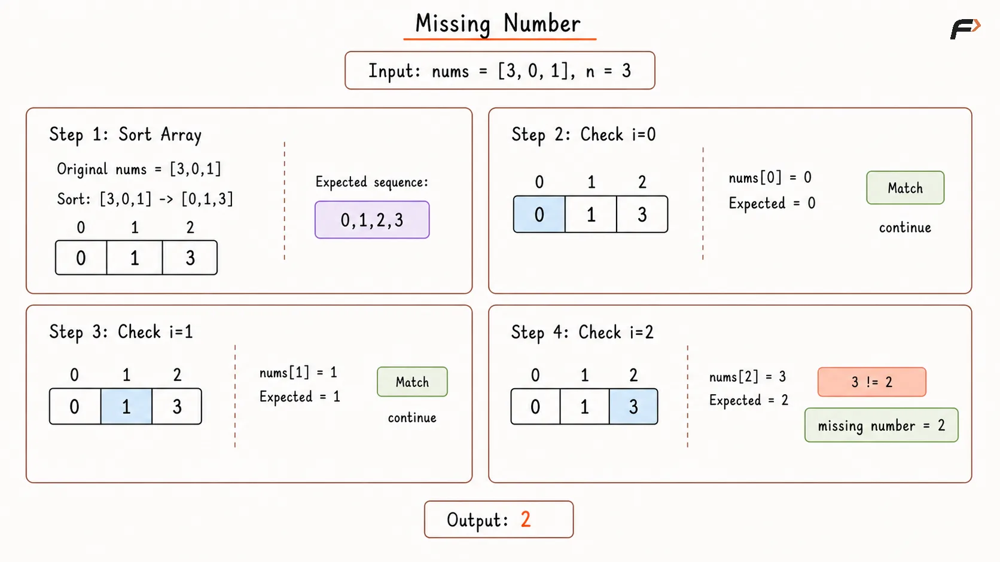
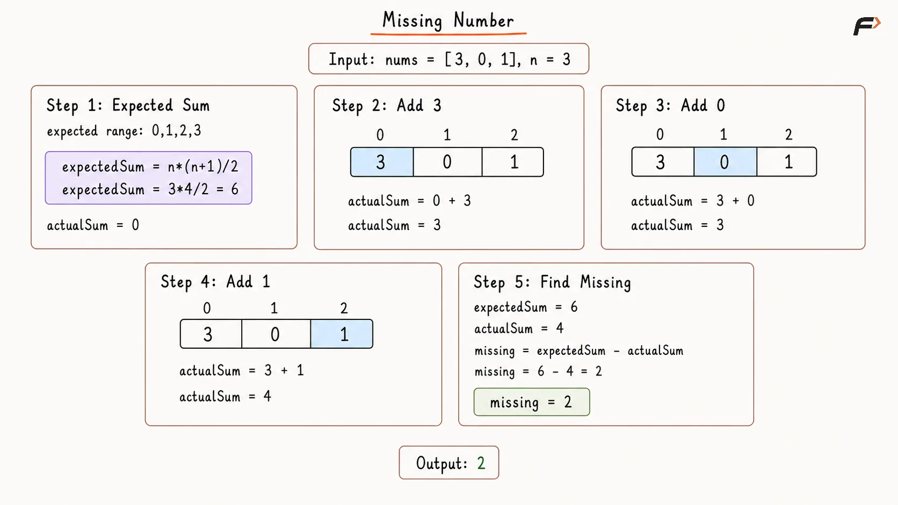
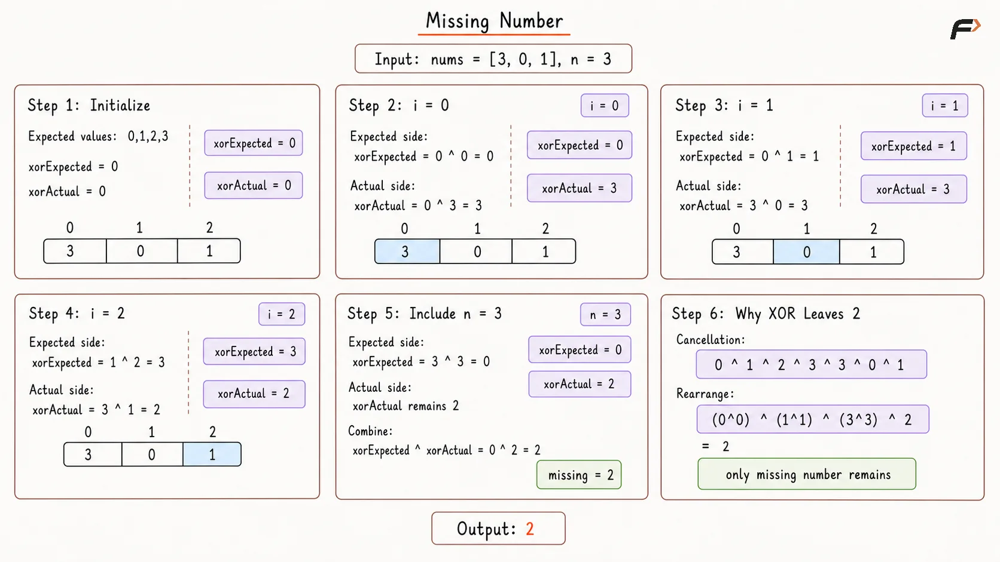

Missing Number
Given an array nums containing n distinct integers taken from the range 0 to n, return the single number from this range that is missing from the array.
Example 1
Input: nums = [3, 0, 1]
Output: 2
Explanation:
The complete range is from 0 to 3: [0, 1, 2, 3].
The number 2 is missing from the array.
Example 2
Input: nums = [9, 6, 4, 2, 3, 5, 7, 0, 1]
Output: 8
Explanation:
The complete range is from 0 to 9.
Every number is present except 8.
Brute Force Approach
Since the array contains every value from 0 to n except one, sorting places the existing values in their expected order.
After sorting, the value at index i should normally be i. Therefore, the first index where nums[i] != i identifies the missing number. If every index matches, then all values from 0 to n - 1 are present, so n must be missing.
Algorithm
Store the size of
numsinn, which also represents the largest possible value in the expected range.Sort
numsin ascending order so each present value can be compared with its expected index.Traverse indices from
0ton - 1.If
nums[i] != i, returnibecause that expected value is missing from the sorted sequence.If no mismatch is found, return
nbecause all values from0ton - 1are present.
Dry Run

Missing Number Brute Force Approach Dry Run .png
Solution
#include <bits/stdc++.h>
using namespace std;
class Solution {
public:
int missingNumber(vector<int>& nums) {
int n = nums.size();
/*
* Sorting places each present value near its expected
* index, so the first mismatch reveals the missing value.
*/
sort(nums.begin(), nums.end());
for (int i = 0; i < n; i++) {
if (nums[i] != i) {
return i;
}
}
/*
* If every index from 0 to n - 1 matches,
* the only missing value from the range is n.
*/
return n;
}
};
int main() {
vector<int> nums = {3, 0, 1};
Solution solution;
cout << solution.missingNumber(nums) << endl;
return 0;
}Complexity Analysis
Time Complexity: O(N log N), because sorting dominates the O(N) traversal.
Space Complexity: Depends on the sorting implementation. An in-place sort may use only auxiliary stack space, while some language/library sorting algorithms may require additional memory.
Better Approach
The complete range 0 to n has a known total sum:
n * (n + 1) / 2
Since nums contains every value from that range except one, subtracting the actual array sum from the expected sum directly gives the missing number.
This removes the need for sorting and reduces the time complexity to linear time.
Algorithm
Store the size of
numsinn, because the complete expected range is0throughn.Compute the expected sum of this range using
n * (n + 1) / 2.Initialize
actualSum = 0to accumulate the values present in the array.Traverse
numsand add every element toactualSum.Return
expectedSum - actualSum, because the difference is the only value absent from the array.
Dry Run

Missing Number Better Approach Dry Run .png
Solution
#include <bits/stdc++.h>
using namespace std;
class Solution {
public:
int missingNumber(vector<int>& nums) {
long long n = nums.size();
/*
* Use a wider integer type because n * (n + 1)
* may exceed the range of a regular int.
*/
long long expectedSum = n * (n + 1) / 2;
long long actualSum = 0;
for (int value : nums) {
actualSum += value;
}
/*
* Every expected value except the missing one
* appears in actualSum, so the difference is the answer.
*/
return static_cast<int>(expectedSum - actualSum);
}
};
int main() {
vector<int> nums = {3, 0, 1};
Solution solution;
cout << solution.missingNumber(nums) << endl;
return 0;
}Complexity Analysis
Time Complexity: O(N), because the array is traversed once.
Space Complexity: O(1), because only a few variables are used.
Optimal Approach
XOR is useful because identical values cancel each other:
x ^ x = 0
and:
x ^ 0 = x
XOR all numbers from 0 to n and also XOR every value present in nums. Every number that appears in both groups cancels out, leaving only the missing value.
Unlike the summation method, this approach does not build a potentially large arithmetic total, so it avoids intermediate sum overflow concerns.
Algorithm
Initialize
xorExpected = 0andxorActual = 0to separately track the XOR of the expected range and the array values.Traverse the array indices from
0ton - 1.XOR each index
iintoxorExpected, because these indices represent values from the expected range.XOR
nums[i]intoxorActualto accumulate all values actually present in the array.XOR
nintoxorExpectedafter the loop, because the expected range contains one additional valuen.Return
xorExpected ^ xorActual. Every common value cancels, leaving only the missing number.
Dry Run

Missing Number Optimal Approach Dry Run .png
Solution
#include <bits/stdc++.h>
using namespace std;
class Solution {
public:
int missingNumber(vector<int>& nums) {
int n = nums.size();
/*
* xorExpected tracks values from the complete range,
* while xorActual tracks values present in the array.
*/
int xorExpected = 0;
int xorActual = 0;
for (int i = 0; i < n; i++) {
xorExpected ^= i;
xorActual ^= nums[i];
}
/*
* Indices cover only 0 to n - 1, so include n
* separately to complete the expected range.
*/
xorExpected ^= n;
/*
* Values present in both groups cancel because x ^ x = 0,
* leaving only the number missing from nums.
*/
return xorExpected ^ xorActual;
}
};
int main() {
vector<int> nums = {3, 0, 1};
Solution solution;
cout << solution.missingNumber(nums) << endl;
return 0;
}Complexity Analysis
Time Complexity: O(N), because the array is traversed once and each XOR operation takes constant time.
Space Complexity: O(1), because only a few integer variables are used.
Interview follow-up Questions
If nums[i] = i for every index from 0 to n - 1, then every value in that range is present. The only remaining value from the complete range 0 to n is n.